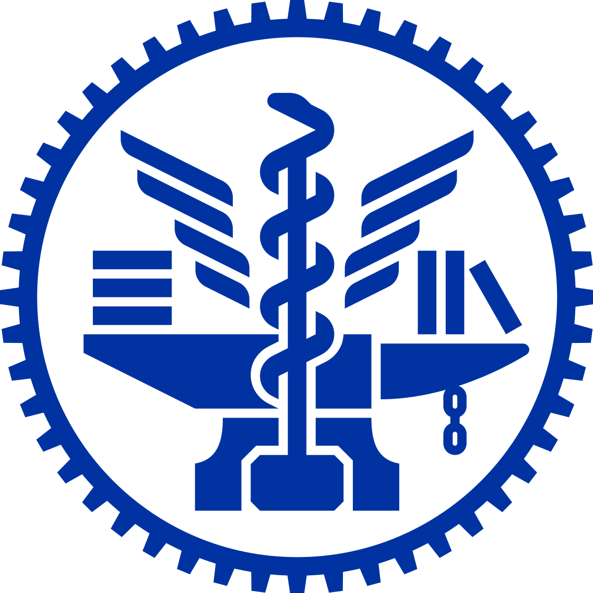
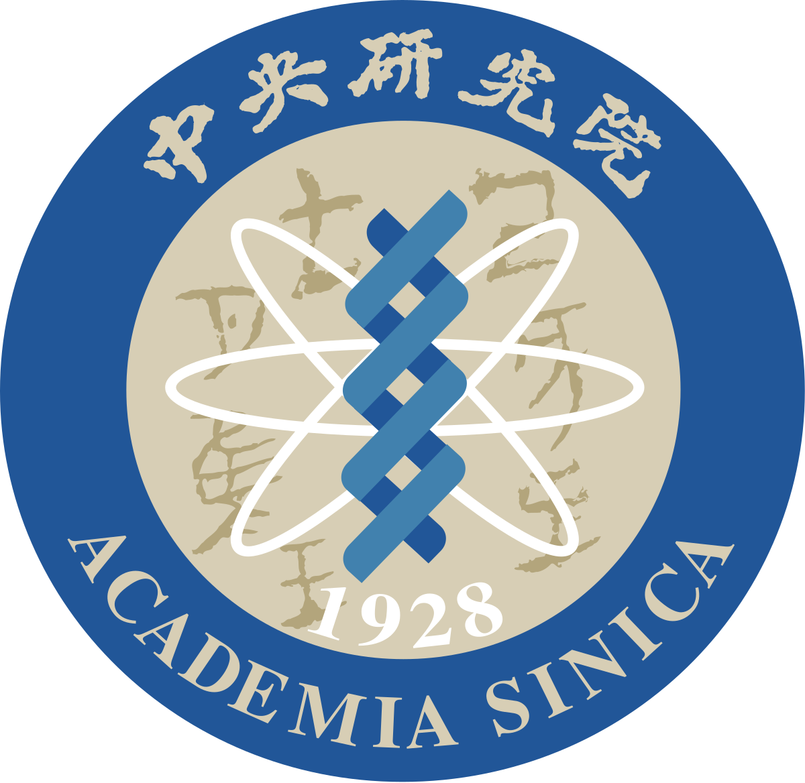
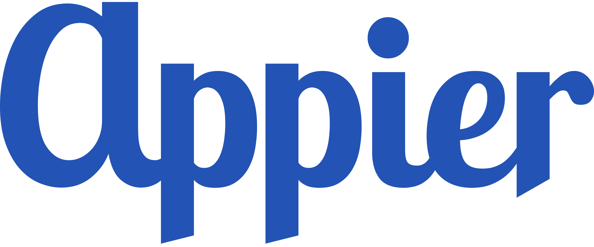
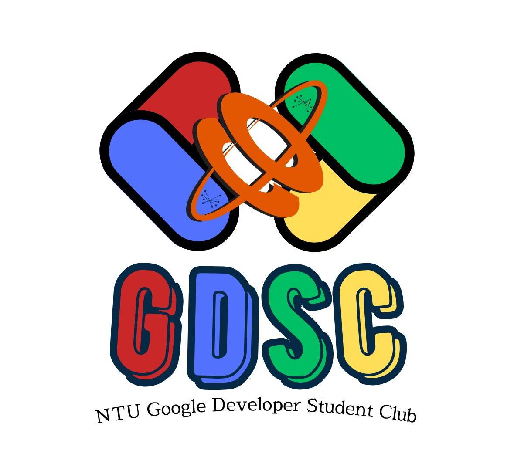
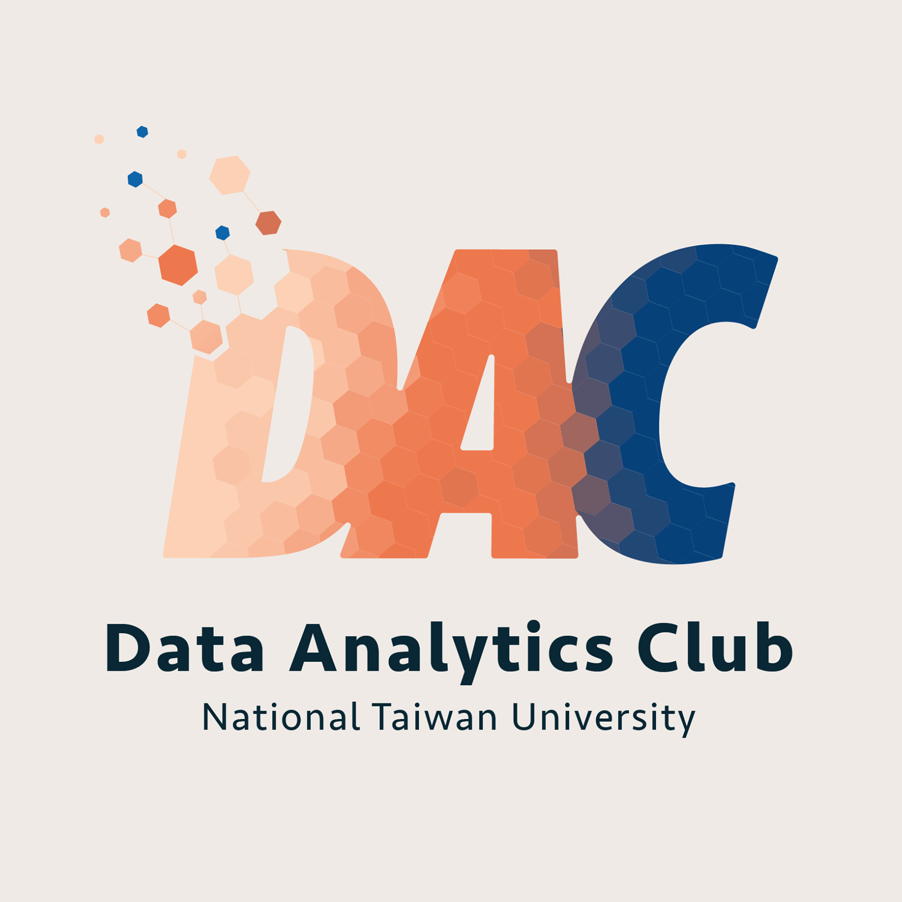

About Me
I am a Ph.D. candidate in Computer Science at National Taiwan University and a member of CMLab, advised by Prof. Cheng-Fu Chou. I also collaborate closely with Prof. Tsung-Wei Ke and serve as a Research Assistant at Academia Sinica under the supervision of Dr. Jun-Cheng Chen. My research focuses on generative models, particularly diffusion models and flow matching, with applications in controllable visual generation, inverse problems, and robot manipulation.
Before joining NTU, I received my M.S. degree in Applied Mathematics from National Yang Ming Chiao Tung University, advised by Prof. Wen-Wei Lin. During my master’s studies, I worked on three-dimensional measure-preserving computational geometry and deep learning for medical image analysis. This training established my foundation in applied mathematics, numerical computation, and mathematical modeling.
My journey through internships at Appier, Intel, and SinoPac has strengthened my problem-solving skills, engineering capabilities, and product-oriented mindset. Along the way, I have learned to identify real-world needs, collaborate effectively across disciplines, and build solutions that balance technical feasibility, user value, and business considerations.
Research
- Computer Vision: I focus on low-level vision through deep learning and mathematical modeling, developing principled methods for recovering visual information from incomplete or degraded observations.
- Generative Models: I study diffusion models and flow matching, particularly inference-time guidance and structured prior modeling, to improve controllability, efficiency, and reliability.
- Trustworthy AI: I investigate robustness and safety in generative models, including adversarial attacks and machine unlearning, to better understand vulnerabilities and build more reliable systems.
Education

National Taiwan University
Ph.D. Candidate, Computer Science and Information Engineering
Sep. 2022 - Present

National Yang Ming Chiao Tung University
M.S., Applied Mathematics
Sep. 2020 - Aug. 2022
National Taiwan Normal University
B.S., Mathematics
Sep. 2016 - Jun. 2020
Work Experience

Academia Sinica
Research Assistant
Jul. 2023 - Present
Intel
Software Engineer Intern
Jul. 2024 - Aug. 2024

Microsoft
Research Intern
Mar. 2024 - Jun. 2024

Appier
Data Analyst Intern
Aug. 2022 - Jun. 2023
National Center for Theoretical Sciences
Undergraduate Student Researcher
Jul. 2020 - Aug. 2020
Academic Society

Member
NTU Google Developer Student Club
Sep. 2024 - Present

5th Director of Academic Affairs
NTU Data Analytics Club
Jun. 2023 - Jun. 2024
Member
Department of Strategic Marketing, TMBA
Sep. 2022 - Jun. 2023
Awards & Scholarships
- Elite Scholarship (PhD Student) Apr. 2026
- TWSIAM 2025 Thesis Award and Most Popular Award Jun. 2025
- TWSIAM 2024 Thesis Award May 2024
- AI CUP 2023 Spring Competition on Multimodal Pathological Voice Classification Golden Medal Award Mar. 2024
- AI CUP 2022 Fall Competition on Crop Status Monitoring by Image Recognition Honorable Mention Award Mar. 2023
- AI CUP 2022 Fall Competition on UAV Smart Counting Honorable Mention Award Mar. 2023
- AI CUP 2022 Fall Explainable Information Tagging Competition for Natural Language Understanding Honorable Mention Award Mar. 2023
- AI CUP 2022 Spring STAS Competition on Identification of Spread through Air Spaces (STAS) in Pathology Images of Lung Adenocarcinoma (II): Using Image Segmentation Strategies to Recognize STAS Contour Merit Award Mar. 2023
- AI CUP 2022 Spring Competition on Looking for a Gentleman in Flowers - Orchid Species Identification and Classification Top 25% Mar. 2023
- Diligent Doctoral Student Fellowship Sep. 2022
- TWSIAM 2022 Paper Poster Contest Pitotech Prize Jul. 2022
- Academic Excellence Award Dec. 2021
- Dr. Chou-Hung-Ching Scholarship Dec. 2021
- Mr. Hu-Dun-Fu Scholarship Nov. 2021
- Academic Excellence Award Sep. 2020
- Ministry of Education Scholarship Oct. 2019
Academic Service
- Conference Reviewer: NeurIPS, ICML, ICLR, CVPR, ECCV, WACV, ICIP
- Journal Reviewer: IEEE T-IFS